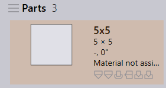
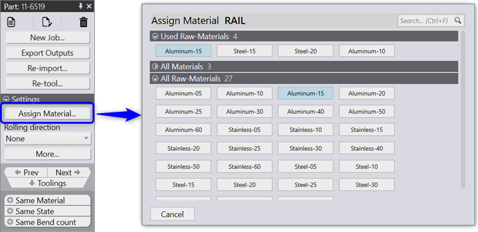

Use the Assign Material… command to assign material to one or more parts. Praxis displays a dialog with the list of raw-materials when this command is used. The raw-materials are displayed as clickable buttons. Use the search box in top right to locate the raw-material and click on the corresponding button to assign it to the selected part(s).

Depending on the selected part(s) and the user part library, the raw-material are displayed in Suggestions, Used and All sections.
